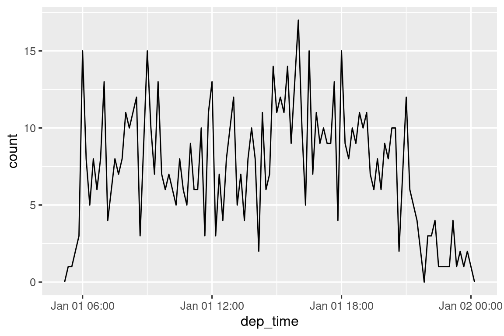
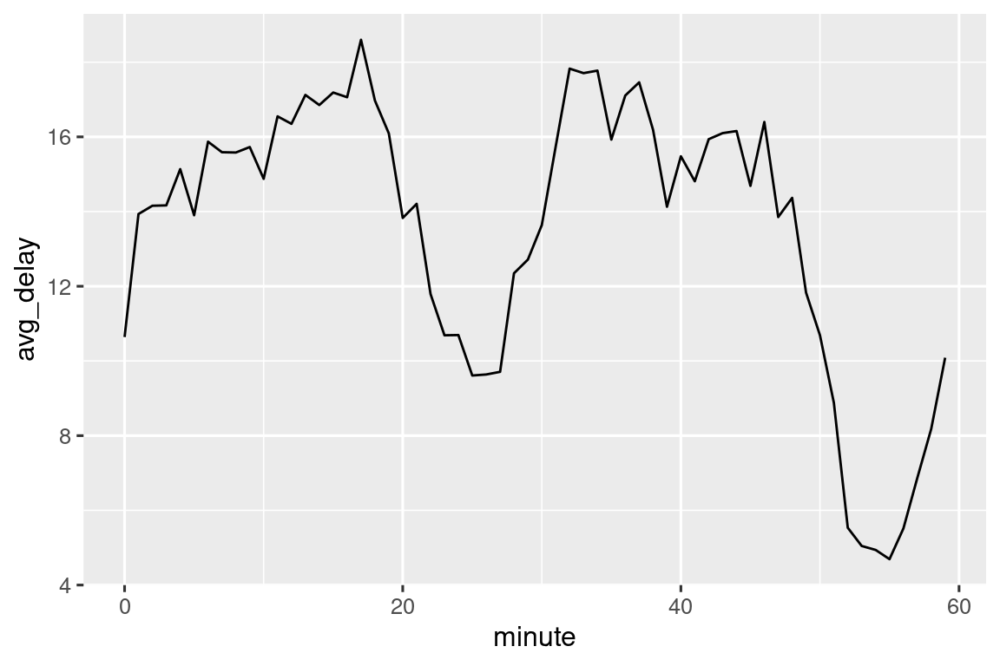
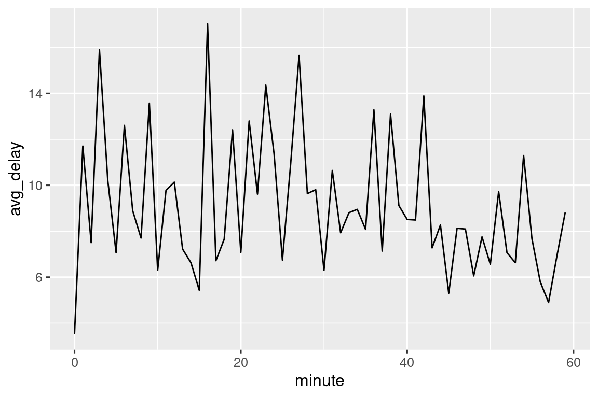
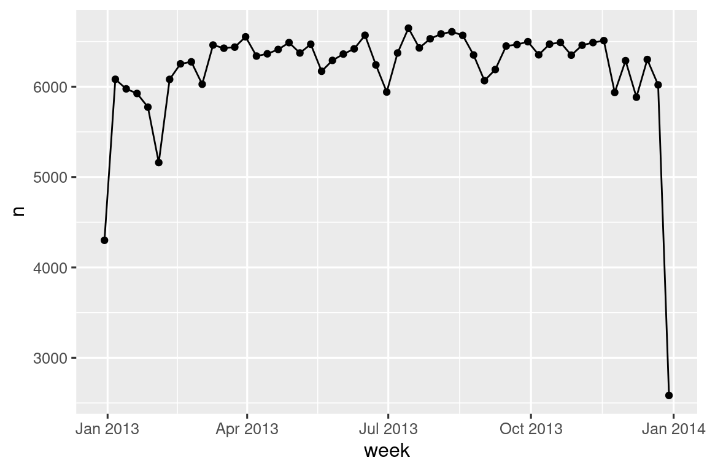
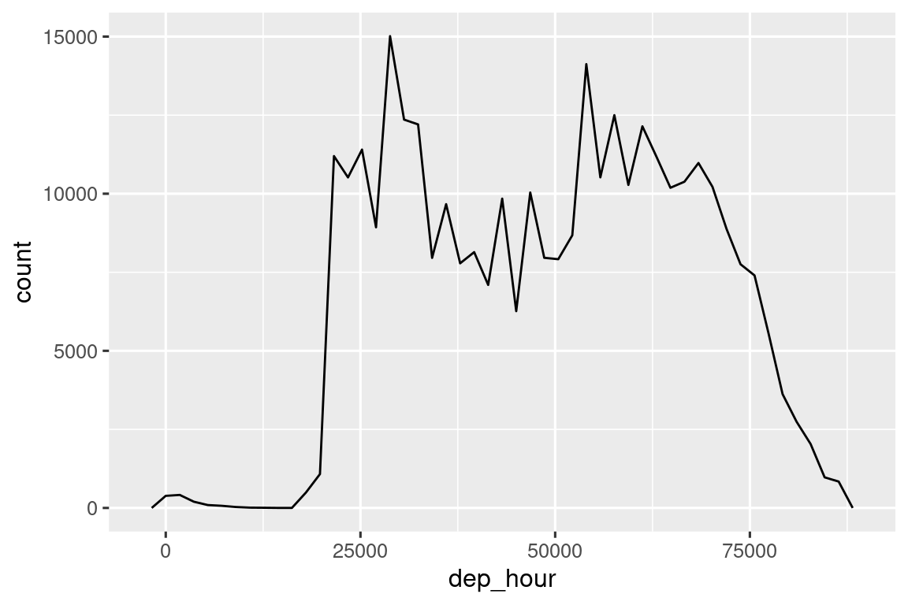

17 Ημερομηνίες και ώρες
17.1 Εισαγωγή
Αυτό το κεφάλαιο θα σας δείξει πώς να εργάζεστε με ημερομηνίες και ώρες στην R. Με μία πρώτη ματιά, οι ημερομηνίες και οι ώρες φαίνονται απλές. Τα χρησιμοποιείτε όλη την ώρα στην κανονική σας ζωή και δεν φαίνεται να προκαλούν μεγάλη σύγχυση. Ωστόσο, όσο περισσότερα μαθαίνετε για τις ημερομηνίες και τις ώρες, τόσο πιο περίπλοκες φαίνονται να γίνονται!
Για να προετοιμαστείτε, σκεφτείτε πόσες ημέρες υπάρχουν σε ένα χρόνο και πόσες ώρες σε μία μέρα. Πιθανότατα θυμηθήκατε ότι τα περισσότερα χρόνια έχουν 365 ημέρες, αλλά τα δίσεκτα έχουν 366. Γνωρίζετε τον πλήρη κανόνα για να προσδιορίσετε εάν ένα έτος είναι δίσεκτο1; Ο αριθμός των ωρών σε μία ημέρα είναι λίγο λιγότερο προφανής: οι περισσότερες μέρες έχουν 24 ώρες, αλλά σε μέρη που χρησιμοποιούν θερινή ώρα (Daylight saving time; DST), μία μέρα κάθε χρόνο έχει 23 ώρες και μία άλλη έχει 25.
Οι ημερομηνίες και οι ώρες είναι δύσκολες γιατί πρέπει να συμβιβάσουν δύο φυσικά φαινόμενα (την περιστροφή της Γης και την τροχιά της γύρω από τον ήλιο) με μία ολόκληρη σειρά γεωπολιτικών φαινομένων, συμπεριλαμβανομένων των μηνών, των ζωνών ώρας και της θερινής ώρας. Αυτό το κεφάλαιο δεν θα σας διδάξει και την παραμικρή λεπτομέρεια σχετικά με τις ημερομηνίες και τις ώρες, αλλά θα σας δώσει μία σταθερή βάση πρακτικών δεξιοτήτων που θα σας βοηθήσουν με κοινές προκλήσεις ανάλυσης δεδομένων.
Θα ξεκινήσουμε δείχνοντάς σας πώς να δημιουργείτε ημερομηνίες-ώρες από διάφορες εισόδους και, στη συνέχεια, αφού έχετε μία ημερομηνία-ώρα, πώς μπορείτε να εξάγετε στοιχεία όπως το έτος, ο μήνας και η ημέρα. Στη συνέχεια, θα βουτήξουμε στο δύσκολο θέμα της εργασίας με χρονικά διαστήματα, τα οποία είναι διαθέσιμα σε εύρος επιλογών ανάλογα με το τι προσπαθείτε να κάνετε. Θα κλείσουμε με μία σύντομη συζήτηση των πρόσθετων προκλήσεων που δημιουργούν οι ζώνες ώρας.
17.1.1 Προαπαιτούμενα
Αυτό το κεφάλαιο θα επικεντρωθεί στο πακέτο lubridate, το οποίο διευκολύνει την εργασία με ημερομηνίες και ώρες στην R. Από την τελευταία κυκλοφορία του tidyverse, το lubridate αποτελεί μέρος του core tidyverse. Θα χρειαστούμε επίσης το nycflights13 για δεδομένα εξάσκησης.
17.2 Δημιουργώντας ημερομηνίες/ώρες
Υπάρχουν τρεις τύποι δεδομένων ημερομηνίας/ώρας που αναφέρονται σε μία συγκεκριμένη χρονική στιγμή:
Μία ημερομηνία. Τα tibbles την εκτυπώνουν ως
<date>.Μία ώρα μέσα σε μία μέρα. Τα tibbles την εκτυπώνουν ως
<time>.Μία ημερομηνία-ώρα είναι ο συνδυασμός μιας ημερομηνίας με μία ώρα και προσδιορίζει μοναδικά μία στιγμή στο χρόνο (συνήθως στο πλησιέστερο δευτερόλεπτο). Τα tibbles την εκτυπώνουν ως
<dttm>. Η βασική έκδοση της R τα ονομάζει POSIXct, όχι και το πιο εύκολο να προφέρουμε όνομα.
Σε αυτό το κεφάλαιο θα εστιάσουμε σε ημερομηνίες και ημερομηνίες-ώρες, καθώς η R δεν έχει εγγενή κλάση για την αποθήκευση της ώρας μόνο.
Εάν χρειάζεστε κάτι τέτοιο, μπορείτε να χρησιμοποιήσετε το πακέτο hms.
Θα πρέπει πάντα να χρησιμοποιείτε τον απλούστερο δυνατό τύπο δεδομένων που λειτουργεί για τις ανάγκες σας. Αυτό σημαίνει ότι αν μπορείτε να χρησιμοποιήσετε μία ημερομηνία αντί για μία ημερομηνία-ώρα, θα είναι καλύτερα να το κάνετε. Οι ημερομηνίες-ώρες είναι πολύ πιο περίπλοκες λόγω της ανάγκης χειρισμού των ζωνών ώρας, στις οποίες θα επανέλθουμε στο τέλος του κεφαλαίου.
Για να λάβετε την τρέχουσα ημερομηνία ή ημερομηνία-ώρα, μπορείτε να χρησιμοποιήσετε τις συναρτήσεις today() ή now():
Εναλλακτικά, οι ακόλουθες ενότητες περιγράφουν τους τέσσερις τρόπους με τους οποίους μπορείτε να δημιουργήσετε μία ημερομηνία/ώρα:
- Κατά την ανάγνωση ενός αρχείου με το πακέτο readr.
- Από μία συμβολοσειρά.
- Από μεμονωμένα στοιχεία ημερομηνίας-ώρας.
- Από ένα υπάρχον αντικείμενο ημερομηνίας/ώρας.
17.2.1 Κατά την εισαγωγή
Εάν το CSV αρχείο σας περιέχει μία ημερομηνία ή ημερομηνία-ώρα που ακολουθεί το πρότυπο ISO8601, δεν χρειάζεται να κάνετε τίποτα - το πακέτο readr θα το αναγνωρίσει αυτόματα:
csv <- "
date,datetime
2022-01-02,2022-01-02 05:12
"
read_csv(csv)
#> # A tibble: 1 × 2
#> date datetime
#> <date> <dttm>
#> 1 2022-01-02 2022-01-02 05:12:00Εάν δεν έχετε ακούσει για το ISO8601 πριν, είναι ένα διεθνές πρότυπο2 για τη σύνταξη ημερομηνιών όπου τα στοιχεία μιας ημερομηνίας είναι οργανωμένα από το μεγαλύτερο στο μικρότερο και χωρίζονται με -. Για παράδειγμα, στο ISO8601, η 3 Μαΐου 2022 γράφετε ως 2022-05-03. Οι ημερομηνίες ISO8601 μπορούν επίσης να περιλαμβάνουν ώρες, όπου οι ώρες, τα λεπτά και τα δευτερόλεπτα διαχωρίζονται με : και τα στοιχεία ημερομηνίας και ώρας διαχωρίζονται είτε με ένα T ή ένα διάστημα. Για παράδειγμα, θα μπορούσατε να γράψετε το “4:26 μ.μ. στις 3 Μαΐου 2022” είτε ως 2022-05-03 16:26 είτε ως 2022-05-03T16:26.
Για άλλες μορφές ημερομηνίας-ώρας, θα χρειαστεί να χρησιμοποιήσετε τα ορίσματα col_types και col_date() ή col_datetime() μαζί με ένα πρότυπο ημερομηνίας-ώρας. Το πρότυπο ημερομηνίας-ώρας που χρησιμοποιείται από το πακέτο readr είναι ένα πρότυπο που χρησιμοποιείται σε πολλές γλώσσες προγραμματισμού, και περιγράφει ένα στοιχείο ημερομηνίας με ένα % ακολουθούμενο από έναν μόνο χαρακτήρα. Για παράδειγμα, το %Y-%m-%d καθορίζει μία ημερομηνία που αφορά ένα έτος, -, μήνα (ως αριθμό) -, ημέρα. Ο πίνακας Πίνακας 17.1 παραθέτει όλες τις επιλογές.
| Τύπος | Κωδικός | Εξήγηση | Παράδειγμα |
|---|---|---|---|
| Έτος | %Y |
Χρονολογία με 4 ψηφία | 2021 |
%y |
Χρονολογία με 2 ψηφία | 21 | |
| Μήνας | %m |
Αριθμός | 2 |
%b |
Συνοπτικό όνομα | Feb | |
%B |
Πλήρες όνομα | February | |
| Μέρα | %d |
Ένα ή δύο ψηφία | 2 |
%e |
Δύο ψηφία | 02 | |
| Ώρα | %H |
24ωρη μορφή | 13 |
%I |
12ωρη μορφή | 1 | |
%p |
ΠΜ/ΜΜ | pm | |
%M |
Λεπτά | 35 | |
%S |
Δευτερόλεπτα | 45 | |
%OS |
Δευτερόλεπτα με δεκαδικά | 45.35 | |
%Z |
Όνομα ζώνης ώρας | America/Chicago | |
%z |
Απόκλιση από την UTC | +0800 | |
| Λοιπά | %. |
Παράλειψη ενός μη ψηφίου | : |
%* |
Παράλειψη όλων των μη ψηφίων |
Και ο παρακάτω κώδικας δείχνει την εφαρμογή μερικών επιλογών σε μία πολύ ασαφή ημερομηνία:
csv <- "
date
01/02/15
"
read_csv(csv, col_types = cols(date = col_date("%m/%d/%y")))
#> # A tibble: 1 × 1
#> date
#> <date>
#> 1 2015-01-02
read_csv(csv, col_types = cols(date = col_date("%d/%m/%y")))
#> # A tibble: 1 × 1
#> date
#> <date>
#> 1 2015-02-01
read_csv(csv, col_types = cols(date = col_date("%y/%m/%d")))
#> # A tibble: 1 × 1
#> date
#> <date>
#> 1 2001-02-15Σημειώστε ότι ανεξάρτητα από το πώς προσδιορίζετε τη μορφή της ημερομηνίας, εμφανίζεται πάντα με τον ίδιο τρόπο μόλις τη διαβάσετε στην R.
Εάν χρησιμοποιείτε το %b ή το %B και εργάζεστε με μη αγγλικές ημερομηνίες, θα πρέπει επίσης να παρέχετε ένα locale(). Δείτε τη λίστα των ενσωματωμένων γλωσσών με την συνάρτηση date_names_langs() ή δημιουργήστε τη δική σας με τη date_names(),
17.2.2 Από συμβολοσειρές
Η γλώσσα προσδιορισμού της ημερομηνίας-ώρας είναι ένα ισχυρό όρισμα, αλλά απαιτεί προσεκτική ανάλυση του προτύπου γραφής της ημερομηνίας. Μία εναλλακτική προσέγγιση είναι η χρήση βοηθητικών συναρτήσεων του πακέτου lubridate που προσπαθούν να προσδιορίσουν αυτόματα τη μορφή μόλις καθορίσετε τη σειρά των διαφόρων στοιχείων. Για να τις χρησιμοποιήσετε, προσδιορίστε τη σειρά με την οποία εμφανίζονται το έτος, ο μήνας και η ημέρα στις ημερομηνίες σας και, στη συνέχεια, τακτοποιήστε τα “y”, “m” και “d” με την ίδια σειρά. Αυτό σας δίνει το όνομα της lubridate συνάρτησης που θα αναλύσει την ημερομηνία σας. Για παράδειγμα:
Η ymd() και οι όμοιες της συναρτήσεις δημιουργούν ημερομηνίες. Για να δημιουργήσετε μία ημερομηνία-ώρα, προσθέστε μία υπογράμμιση και ένα ή περισσότερα από τα “h”, “m” και “s” στο όνομα της συνάρτησης που διαβάζει την ημερομηνία:
Μπορείτε επίσης να επιβάλετε τη δημιουργία μιας ημερομηνίας-ώρας από μία ημερομηνία παρέχοντας μία ζώνη ώρας:
ymd("2017-01-31", tz = "UTC")
#> [1] "2017-01-31 UTC"Εδώ χρησιμοποιώ τη ζώνη ώρας UTC3, την οποία ίσως γνωρίζετε και ως GMT, ή ώρα Γκρίνουϊτς, την ώρα δηλαδή σε γεωγραφικό μήκος 0°4 . Δεν χρησιμοποιεί θερινή ώρα, καθιστώντας λίγο πιο εύκολους τους υπολογισμούς .
17.2.3 Από μεμονωμένα στοιχεία
Αντί για μία συμβολοσειρά, μερικές φορές θα έχετε τα μεμονωμένα στοιχεία της ημερομηνίας-ώρας κατανεμημένα σε πολλές στήλες. Αυτό έχουμε στα δεδομένα του flights:
flights |>
select(year, month, day, hour, minute)
#> # A tibble: 336,776 × 5
#> year month day hour minute
#> <int> <int> <int> <dbl> <dbl>
#> 1 2013 1 1 5 15
#> 2 2013 1 1 5 29
#> 3 2013 1 1 5 40
#> 4 2013 1 1 5 45
#> 5 2013 1 1 6 0
#> 6 2013 1 1 5 58
#> # ℹ 336,770 more rowsΓια να δημιουργήσετε μία ημερομηνία/ώρα από αυτό το είδος εισόδου, χρησιμοποιήστε τη make_date() για ημερομηνίες ή το make_datetime() για τις ημερομηνίες-ώρες:
flights |>
select(year, month, day, hour, minute) |>
mutate(departure = make_datetime(year, month, day, hour, minute))
#> # A tibble: 336,776 × 6
#> year month day hour minute departure
#> <int> <int> <int> <dbl> <dbl> <dttm>
#> 1 2013 1 1 5 15 2013-01-01 05:15:00
#> 2 2013 1 1 5 29 2013-01-01 05:29:00
#> 3 2013 1 1 5 40 2013-01-01 05:40:00
#> 4 2013 1 1 5 45 2013-01-01 05:45:00
#> 5 2013 1 1 6 0 2013-01-01 06:00:00
#> 6 2013 1 1 5 58 2013-01-01 05:58:00
#> # ℹ 336,770 more rowsΑς κάνουμε το ίδιο πράγμα για καθεμία από τις τέσσερις στήλες του flights με δεδομένα ημερομηνίας. Οι ώρες αναπαρίστανται σε μία ελαφρώς περίεργη μορφή, επομένως χρησιμοποιούμε αριθμητική υπολοίπων για να εξάγουμε τα στοιχεία της ώρας και των λεπτών. Αφού δημιουργήσουμε τις μεταβλητές ημερομηνίας-ώρας, εστιάζουμε στις μεταβλητές που θα εξερευνήσουμε στο υπόλοιπο κεφάλαιο.
make_datetime_100 <- function(year, month, day, time) {
make_datetime(year, month, day, time %/% 100, time %% 100)
}
flights_dt <- flights |>
filter(!is.na(dep_time), !is.na(arr_time)) |>
mutate(
dep_time = make_datetime_100(year, month, day, dep_time),
arr_time = make_datetime_100(year, month, day, arr_time),
sched_dep_time = make_datetime_100(year, month, day, sched_dep_time),
sched_arr_time = make_datetime_100(year, month, day, sched_arr_time)
) |>
select(origin, dest, ends_with("delay"), ends_with("time"))
flights_dt
#> # A tibble: 328,063 × 9
#> origin dest dep_delay arr_delay dep_time sched_dep_time
#> <chr> <chr> <dbl> <dbl> <dttm> <dttm>
#> 1 EWR IAH 2 11 2013-01-01 05:17:00 2013-01-01 05:15:00
#> 2 LGA IAH 4 20 2013-01-01 05:33:00 2013-01-01 05:29:00
#> 3 JFK MIA 2 33 2013-01-01 05:42:00 2013-01-01 05:40:00
#> 4 JFK BQN -1 -18 2013-01-01 05:44:00 2013-01-01 05:45:00
#> 5 LGA ATL -6 -25 2013-01-01 05:54:00 2013-01-01 06:00:00
#> 6 EWR ORD -4 12 2013-01-01 05:54:00 2013-01-01 05:58:00
#> # ℹ 328,057 more rows
#> # ℹ 3 more variables: arr_time <dttm>, sched_arr_time <dttm>, …Με αυτά τα δεδομένα μπορούμε να απεικονίσουμε την κατανομή των ωρών αναχώρησης κατά τη διάρκεια του έτους:
flights_dt |>
ggplot(aes(x = dep_time)) +
geom_freqpoly(binwidth = 86400) # 86400 seconds = 1 day![Ένα πολύγωνο συχνοτήτηων με τις ώρες αναχώρησης (από τον Ιανουάριο μέχρι το Δεκέμβριο του 2023) στον άξονα των x και τον αριθμό των πτήσεων στον άξονα των y (τιμές μεταξύ 0-1000). Το πολύγωνο συχνοτήτων ομαδοποιείται με την ημέρα, οπότε βλέπετε μια χρονοσειρά των πτήσεων ανά ημέρα. Στο μοτίβο κυριαρχεί ένα εβδομαδιαίο μοτίβο - υπάρχουν λιγότερες πτήσεις τα σαββατοκύριακα. Υπάρχουν λίγες ημέρες που ξεχωρίζουν και φαίνεται να έχουν απροσδόκητα λίγες πτήσεις στις αρχές του Φεβρουαρίου και του Ιουλίου, αλλά και στο τέλος του Νοεμβρίου και του Δεκεμβρίου.](datetimes_files/figure-html/unnamed-chunk-12-1.png)
Ή στη διάρκεια μιας μέρας:
flights_dt |>
filter(dep_time < ymd(20130102)) |>
ggplot(aes(x = dep_time)) +
geom_freqpoly(binwidth = 600) # 600 s = 10 minutes
Σημειώστε ότι όταν χρησιμοποιείτε ημερομηνίες-ώρες σε ένα αριθμητικό πλαίσιο (όπως για παράδειγμα σε ένα ιστόγραμμα), το 1 σημαίνει 1 δευτερόλεπτο, επομένως ένα πλάτος bin 86400 σημαίνει μία ημέρα. Για ημερομηνίες, 1 σημαίνει 1 ημέρα.
17.2.4 Από άλλους τύπους
Μπορεί να θέλετε να κάνετε εναλλαγή μεταξύ ημερομηνίας-ώρας και ημερομηνίας. Αυτή είναι η δουλειά των as_datetime() και as_date():
as_datetime(today())
#> [1] "2024-04-21 UTC"
as_date(now())
#> [1] "2024-04-21"Μερικές φορές θα λάβετε δεδομένα ημερομηνίας/ώρας ως αριθμητικές μετατοπίσεις από την “Unix εποχή”, δηλαδή από την 1970-01-01. Εάν η μετατόπιση είναι σε δευτερόλεπτα, χρησιμοποιήστε το as_datetime(), ενώ εάν είναι σε ημέρες, χρησιμοποιήστε το as_date().
as_datetime(60 * 60 * 10)
#> [1] "1970-01-01 10:00:00 UTC"
as_date(365 * 10 + 2)
#> [1] "1980-01-01"17.2.5 Ασκήσεις
-
Τι συμβαίνει εάν διαβάσετε μία συμβολοσειρά που περιέχει μη έγκυρες ημερομηνίες;
Ποιος είναι ο ρόλος του ορίσματος
tzoneστη συνάρτησηtoday(); Γιατί είναι σημαντικό;-
Για κάθε μία από τις παρακάτω ημερομηνίες-ώρες δείξτε πως θα τις διαβάζατε χρησιμοποιώντας προδιαγραφές στηλών από το πακέτο readr και μία από τις συναρτήσεις του lubridate.
d1 <- "January 1, 2010" d2 <- "2015-Mar-07" d3 <- "06-Jun-2017" d4 <- c("August 19 (2015)", "July 1 (2015)") d5 <- "12/30/14" # Dec 30, 2014 t1 <- "1705" t2 <- "11:15:10.12 PM"
17.3 Στοιχεία ημερομηνίας-ώρας
Τώρα που ξέρετε πώς να μεταφέρετε δεδομένα ημερομηνίας-ώρας στις δομές δεδομένων ημερομηνίας-ώρας της R, ας εξερευνήσουμε τι μπορείτε να κάνετε με αυτά. Αυτή η ενότητα θα επικεντρωθεί στις συναρτήσεις του accessor που σας επιτρέπουν να λαμβάνετε και να ορίζετε μεμονωμένα στοιχεία. Η επόμενη ενότητα θα εξετάσει πώς λειτουργεί η αριθμητική σε δεδομένα ημερομηνίας-ώρας.
17.3.1 Εξαγωγή στοιχείων
Μπορείτε να εξάγετε μεμονωμένα μέρη της ημερομηνίας με τις συναρτήσεις του πακέτου accessor year(), month(), mday() (ημέρα του μήνα), yday() (ημέρα του έτους), wday() (ημέρα της εβδομάδας), hour(), minute() και second(). Αυτές είναι ουσιαστικά το αντίθετο της make_datetime().
Για τις month() και wday() μπορείτε να ορίσετε το label = TRUE για να επιστρέφει τη συντομογραφία του μήνα ή της ημέρας της εβδομάδας. Ορίστε abbr = FALSE για να λαμβάνετε το πλήρες όνομα.
Μπορούμε να χρησιμοποιήσουμε τη wday() για να δούμε ότι περισσότερες πτήσεις αναχωρούν στη διάρκεια της εβδομάδας παρά κατά το σαββατοκύριακο:
Μπορούμε επίσης να δούμε τη μέση καθυστέρηση αναχώρησης ανά λεπτό μέσα στην ώρα. Υπάρχει ένα ενδιαφέρον μοτίβο: οι πτήσεις που αναχωρούν μεταξύ των λεπτών 20-30 και 50-60 έχουν πολύ μικρότερες καθυστερήσεις από πτήσεις που αναχωρούν την υπόλοιπη ώρα!
flights_dt |>
mutate(minute = minute(dep_time)) |>
group_by(minute) |>
summarize(
avg_delay = mean(dep_delay, na.rm = TRUE),
n = n()
) |>
ggplot(aes(x = minute, y = avg_delay)) +
geom_line()
Είναι ενδιαφέρον ότι, αν κοιτάξουμε την προγραμματισμένη ώρα αναχώρησης, δεν βλέπουμε τόσο ισχυρό μοτίβο:
sched_dep <- flights_dt |>
mutate(minute = minute(sched_dep_time)) |>
group_by(minute) |>
summarize(
avg_delay = mean(arr_delay, na.rm = TRUE),
n = n()
)
ggplot(sched_dep, aes(x = minute, y = avg_delay)) +
geom_line()
Γιατί λοιπόν βλέπουμε αυτό το μοτίβο με τις πραγματικές ώρες αναχώρησης; Λοιπόν, όπως πολλά δεδομένα που συλλέγονται από ανθρώπους, υπάρχει μία ισχυρή προκατάληψη για πτήσεις που αναχωρούν σε «ωραίες» ώρες αναχώρησης, όπως δείχνει το Σχήμα 17.1. Να είστε πάντα σε εγρήγορση για αυτού του είδους τα μοτίβα κάθε φορά που εργάζεστε με δεδομένα που περιλαμβάνουν ανθρώπινη κρίση!
17.3.2 Στρογγυλοποίηση
Μία εναλλακτική προσέγγιση για τη γραφική αναπαράσταση μεμονωμένων στοιχείων είναι η στρογγυλοποίηση της ημερομηνίας σε μία κοντινή μονάδα χρόνου, χρησιμοποιώντας τις floor_date(), round_date(), και ceiling_date() Κάθε συνάρτηση χρειάζεται ένα διάνυσμα ημερομηνιών για προσαρμογή και, στη συνέχεια, το όνομα της μονάδας για στρογγυλοποίηση προς τα κάτω (floor), προς τα πάνω (ceiling) ή προς σε αυτή. Αυτό, για παράδειγμα, μας επιτρέπει να αναπαραστήσουμε τον αριθμό των πτήσεων ανά εβδομάδα:
flights_dt |>
count(week = floor_date(dep_time, "week")) |>
ggplot(aes(x = week, y = n)) +
geom_line() +
geom_point()
Μπορείτε να χρησιμοποιήσετε τη στρογγυλοποίηση για να παρουσιάσετε την κατανομή των πτήσεων στη διάρκεια μιας ημέρας, υπολογίζοντας τη διαφορά μεταξύ του dep_time και της νωρίτερης στιγμής εκείνης της ημέρας:
flights_dt |>
mutate(dep_hour = dep_time - floor_date(dep_time, "day")) |>
ggplot(aes(x = dep_hour)) +
geom_freqpoly(binwidth = 60 * 30)
#> Don't know how to automatically pick scale for object of type <difftime>.
#> Defaulting to continuous.
Ο υπολογισμός της διαφοράς μεταξύ ενός ζεύγους τιμών ημερομηνίας-ώρας επιστρέφει ένα difftime (θα δούμε περισσότερα για αυτό στα Ενότητα 17.4.3). Μπορούμε να το μετατρέψουμε σε αντικείμενο hms για να πάρουμε έναν πιο χρήσιμο άξονα x:
flights_dt |>
mutate(dep_hour = hms::as_hms(dep_time - floor_date(dep_time, "day"))) |>
ggplot(aes(x = dep_hour)) +
geom_freqpoly(binwidth = 60 * 30)![Ένα διάγραμμα γραμμών με τις ώρες αναχώρησης (από τα μεσάνυχτα της μία μέρας έως τα μεσάνυχτα της επόμενης) στον άξονα x και τον αριθμό πτήσεων στον άξονα y (0 έως 15000). Υπάρχουν πολύ λίγες (<100) πτήσεις πριν από τις 5 π.μ. Στη συνέχεια, ο αριθμός των πτήσεων αυξάνεται γρήγορα στις 12000 / ώρα, με κορύφωση τις 15000 στις 9 π.μ., πριν πέσει σε περίπου 8000 / ώρα για τις 10 π.μ., έως τις 2 μ.μ. Στη συνέχεια, ο αριθμός των πτήσεων αυξάνεται σε περίπου 12000 την ώρα μέχρι τις 8 μ.μ., οπότε μειώνονται ξανά γρήγορα.](datetimes_files/figure-html/unnamed-chunk-26-1.png)
17.3.3 Τροποποίηση στοιχείων
Μπορείτε επίσης να χρησιμοποιήσετε κάθε συνάρτηση του accessor για να τροποποιήσετε τα στοιχεία μιας ημερομηνίας/ώρας. Αυτό δεν συναντάται ιδιαίτερα στην ανάλυση δεδομένων, αλλά μπορεί να είναι χρήσιμο κατά τον καθαρισμό δεδομένων που έχουν σαφώς εσφαλμένες ημερομηνίες.
Εναλλακτικά, αντί να τροποποιήσετε μία υπάρχουσα μεταβλητή, μπορείτε να δημιουργήσετε μία νέα ημερομηνία-ώρα με την update(). Αυτό σας επιτρέπει επίσης να ορίσετε πολλές τιμές σε ένα βήμα:
update(datetime, year = 2030, month = 2, mday = 2, hour = 2)
#> [1] "2030-02-02 02:34:56 UTC"Εάν οι τιμές είναι πολύ μεγάλες, θα περάσουν στην επόμενη γραμμή:
17.3.4 Ασκήσεις
Πώς αλλάζει η κατανομή των χρόνων πτήσης μέσα σε μία ημέρα κατά τη διάρκεια του έτους;
Συγκρίνετε τις
dep_time,sched_dep_timeκαιdep_delay. Είναι συνεπείς; Εξηγήστε τα ευρήματά σας.Συγκρίνετε τη μεταβλητή
air_timeμε τη διάρκεια μεταξύ της αναχώρησης και της άφιξης. Εξηγήστε τα ευρήματά σας. (Υπόδειξη: λάβετε υπόψη την τοποθεσία του αεροδρομίου.)Πώς αλλάζει ο μέσος χρόνος καθυστέρησης κατά τη διάρκεια μιας ημέρας; Θα πρέπει να χρησιμοποιήσετε το
dep_timeή τοsched_dep_time; Γιατί;Ποια ημέρα της εβδομάδας πρέπει να φύγετε αν θέλετε να ελαχιστοποιήσετε την πιθανότητα καθυστέρησης;
Τι κάνει την κατανομή των
diamonds$caratκαιflights$sched_dep_timeπαρόμοια;Επιβεβαιώστε την υπόθεσή μας ότι οι πρόωρες αναχωρήσεις πτήσεων στα λεπτά 20-30 και 50-60 προκαλούνται από προγραμματισμένες πτήσεις που αναχωρούν νωρίς. Υπόδειξη: δημιουργήστε μία δυαδική μεταβλητή που σας ενημερώνει εάν μία πτήση καθυστέρησε ή όχι.
17.4 Χρονικά διαστήματα
Στη συνέχεια θα μάθετε πώς λειτουργεί η αριθμητική με ημερομηνίες, συμπεριλαμβανομένης της αφαίρεσης, της πρόσθεσης και της διαίρεσης. Στην πορεία, θα μάθετε για τρεις σημαντικές κλάσεις που αντιπροσωπεύουν χρονικά διαστήματα:
- Durations (διάρκειες), που αντιπροσωπεύουν έναν ακριβή αριθμό δευτερολέπτων.
- Periods (περίοδοι), που αντιπροσωπεύουν ανθρώπινες μονάδες μέτρησης του χρόνου, όπως εβδομάδες και μήνες.
- Intervals (διαστήματα), τα οποία αντιπροσωπεύουν ένα σημείο αρχής και τέλους
Πώς επιλέγετε μεταξύ διάρκειας, περιόδων και διαστημάτων; Όπως πάντα, επιλέξτε την απλούστερη δομή δεδομένων που λύνει το πρόβλημά σας. Εάν ενδιαφέρεστε μόνο για τον φυσικό χρόνο, χρησιμοποιήστε τη διάρκεια. Εάν χρειάζεται να προσθέσετε ανθρώπινους χρόνους, χρησιμοποιήστε μία περίοδο εάν πρέπει να υπολογίσετε πόσο μεγάλο είναι ένα διάστημα σε ανθρώπινες μονάδες, χρησιμοποιήστε ένα διάστημα.
17.4.1 Διάρκειες
Στην R, όταν αφαιρείτε δύο ημερομηνίες, λαμβάνετε ένα αντικείμενο difftime:
Ένα αντικείμενο κλάσης difftime καταγράφει ένα χρονικό διάστημα δευτερολέπτων, λεπτών, ωρών, ημερών ή εβδομάδων. Αυτή η ασάφεια μπορεί να δυσκολέψει την εργασία με τα difftimes, οπότε το lubridate παρέχει μία εναλλακτική λύση που χρησιμοποιεί πάντα δευτερόλεπτα: τη διάρκεια (duration).
as.duration(h_age)
#> [1] "1404950400s (~44.52 years)"Οι διάρκειες συνοδεύονται από μία σειρά από βολικές συναρτήσεις για την κατασκευή τους:
dseconds(15)
#> [1] "15s"
dminutes(10)
#> [1] "600s (~10 minutes)"
dhours(c(12, 24))
#> [1] "43200s (~12 hours)" "86400s (~1 days)"
ddays(0:5)
#> [1] "0s" "86400s (~1 days)" "172800s (~2 days)"
#> [4] "259200s (~3 days)" "345600s (~4 days)" "432000s (~5 days)"
dweeks(3)
#> [1] "1814400s (~3 weeks)"
dyears(1)
#> [1] "31557600s (~1 years)"Οι διάρκειες καταγράφουν πάντα το χρονικό διάστημα σε δευτερόλεπτα. Μεγαλύτερες μονάδες δημιουργούνται μετατρέποντας λεπτά, ώρες, ημέρες, εβδομάδες και χρόνια σε δευτερόλεπτα: 60 δευτερόλεπτα σε ένα λεπτό, 60 λεπτά σε μία ώρα, 24 ώρες την ημέρα και 7 ημέρες την εβδομάδα. Οι μεγαλύτερες μονάδες χρόνου είναι πιο προβληματικές. Ένα έτος χρησιμοποιεί τον “μέσο” αριθμό ημερών σε ένα έτος, δηλαδή 365,25. Δεν υπάρχει τρόπος να μετατραπεί ένας μήνας σε διάρκεια, γιατί απλά υπάρχει μεγάλη διακύμανση.
Επίσης, μπορείτε να προσθέσετε και να πολλαπλασιάσετε τις διάρκειες:
Μπορείτε να προσθέσετε και να αφαιρέσετε διάρκειες σε και από ημέρες:
Ωστόσο, επειδή οι διάρκειες αντιπροσωπεύουν έναν ακριβή αριθμό δευτερολέπτων, μερικές φορές μπορεί να έχετε ένα απροσδόκητο αποτέλεσμα:
Γιατί μία μέρα αμέσως μετά τη 1 π.μ. της 8ης Μαρτίου, η αντίστοιχη ώρα και μέρα είναι 2 π.μ. της 9ης Μαρτίου; Εάν κοιτάξετε προσεκτικά την ημερομηνία, μπορεί επίσης να παρατηρήσετε ότι οι ζώνες ώρας έχουν αλλάξει. Η 8η Μαρτίου έχει μόνο 23 ώρες, επειδή είναι η έναρξη της θερινής ώρας, οπότε αν προσθέσουμε ολόκληρες ημέρες σύμφωνα με τη διάρκεια τους σε δευτερόλεπτα, καταλήγουμε σε διαφορετική ώρα.
17.4.2 Περίοδοι
Για την επίλυση αυτού του προβλήματος, το lubridate παρέχει περιόδους. Οι περίοδοι είναι χρονικά διαστήματα, αλλά δεν έχουν σταθερή διάρκεια σε δευτερόλεπτα. Αντίθετα λειτουργούν με “ανθρώπινους” χρόνους, όπως ημέρες και μήνες. Αυτό τους επιτρέπει να εργάζονται με πιο διαισθητικό τρόπο:
one_am
#> [1] "2026-03-08 01:00:00 EST"
one_am + days(1)
#> [1] "2026-03-09 01:00:00 EDT"Όπως και οι διάρκειες, οι περίοδοι μπορούν να δημιουργηθούν με μία σειρά από βοηθητικές συναρτήσεις για την κατασκευή τους.
Μπορείτε να προσθέσετε και να πολλαπλασιάσετε περιόδους:
Και φυσικά, να τις προσθέσετε σε ημερομηνίες. Σε σύγκριση με τις διάρκειες, οι περίοδοι είναι πιο πιθανό να κάνουν αυτό που θα περιμένατε:
Ας χρησιμοποιήσουμε περιόδους για να διορθώσουμε ένα παράδοξο που σχετίζεται με τις ημερομηνίες της πτήσης μας. Μερικά αεροπλάνα φαίνεται να έφτασαν στον προορισμό τους πριν αναχωρήσουν από τη Νέα Υόρκη.
flights_dt |>
filter(arr_time < dep_time)
#> # A tibble: 10,633 × 9
#> origin dest dep_delay arr_delay dep_time sched_dep_time
#> <chr> <chr> <dbl> <dbl> <dttm> <dttm>
#> 1 EWR BQN 9 -4 2013-01-01 19:29:00 2013-01-01 19:20:00
#> 2 JFK DFW 59 NA 2013-01-01 19:39:00 2013-01-01 18:40:00
#> 3 EWR TPA -2 9 2013-01-01 20:58:00 2013-01-01 21:00:00
#> 4 EWR SJU -6 -12 2013-01-01 21:02:00 2013-01-01 21:08:00
#> 5 EWR SFO 11 -14 2013-01-01 21:08:00 2013-01-01 20:57:00
#> 6 LGA FLL -10 -2 2013-01-01 21:20:00 2013-01-01 21:30:00
#> # ℹ 10,627 more rows
#> # ℹ 3 more variables: arr_time <dttm>, sched_arr_time <dttm>, …Πρόκειται για ολονύχτιες πτήσεις. Χρησιμοποιήσαμε τις ίδιες πληροφορίες ημερομηνίας τόσο για τις ώρες αναχώρησης όσο και για τις ώρες άφιξης, αλλά αυτές οι πτήσεις έφτασαν την επόμενη μέρα. Μπορούμε να το διορθώσουμε προσθέτοντας το days(1) στην ώρα άφιξης κάθε ολονύκτιας πτήσης.
Τώρα όλες μας οι πτήσεις υπακούν στους νόμους της φυσικής.
flights_dt |>
filter(arr_time < dep_time)
#> # A tibble: 0 × 10
#> # ℹ 10 variables: origin <chr>, dest <chr>, dep_delay <dbl>,
#> # arr_delay <dbl>, dep_time <dttm>, sched_dep_time <dttm>, …17.4.3 Διαστήματα
Τι επιστρέφει το dyears(1) / ddays(365); Δεν είναι ακριβώς μονάδα, επειδή το dyears() ορίζεται ως ο αριθμός των δευτερολέπτων ανά μέσο χρόνο, που είναι 365,25 ημέρες.
Τι επιστρέφει το years(1) / days(1); Εάν το έτος ήταν 2015 θα έπρεπε να επιστρέψει 365, αλλά αν ήταν 2016, θα έπρεπε να επιστρέψει 366! Δεν υπάρχουν επαρκείς πληροφορίες ώστε το lubridate να δώσει μία σαφή απάντηση. Αυτό που κάνει είναι να δώσει μία εκτίμηση:
Εάν θέλετε μία πιο ακριβή μέτρηση, θα πρέπει να χρησιμοποιήσετε ένα διάστημα. Ένα διάστημα είναι ένα ζεύγος χρόνων ημερομηνίας αρχής και τέλους ή μπορείτε να το σκεφτείτε ως μία διάρκεια με ένα σημείο εκκίνησης.
Μπορείτε να δημιουργήσετε ένα διάστημα γράφοντας start %--% end:
Στη συνέχεια, θα μπορούσατε να το διαιρέσετε με την days() για να μάθετε πόσες ημέρες υπάρχουν μέσα στο έτος:
17.4.4 Ασκήσεις
Εξηγήστε τα
days(!overnight)καιdays(overnight)σε κάποιον που μόλις άρχισε να μαθαίνει R. Ποιο είναι το βασικό στοιχείο που πρέπει να γνωρίζετε;Δημιουργήστε ένα διάνυσμα ημερομηνιών δίνοντας την πρώτη ημέρα κάθε μήνα το 2015. Δημιουργήστε ένα διάνυσμα ημερομηνιών δίνοντας την πρώτη ημέρα κάθε μήνα στο τρέχον έτος.
Γράψτε μία συνάρτηση που με βάση τα γενέθλιά σας (ως ημερομηνία), να εμφανίζει πόσο χρονών είστε σε χρόνια.
Γιατί δεν μπορεί να λειτουργήσει το
(today() %--% (today() + years(1))) / months(1);
17.5 Ζώνες ώρας
Οι ζώνες ώρας είναι ένα εξαιρετικά περίπλοκο θέμα λόγω της αλληλεπίδρασής τους με γεωπολιτικές οντότητες. Ευτυχώς δεν χρειάζεται να εμβαθύνουμε σε όλες τις λεπτομέρειες, καθώς δεν είναι όλες σημαντικές για την ανάλυση δεδομένων, αλλά υπάρχουν μερικές προκλήσεις που θα πρέπει να αντιμετωπίσουμε κατά μέτωπο.
Η πρώτη πρόκληση είναι ότι τα καθημερινά ονόματα των ζωνών ώρας τείνουν να είναι ασαφή. Για παράδειγμα, εάν είστε Αμερικανός, πιθανότατα είστε εξοικειωμένοι με την EST ή την ανατολική τυπική ώρα. Ωστόσο, τόσο η Αυστραλία όσο και ο Καναδάς έχουν επίσης EST! Για να αποφευχθεί η σύγχυση, η R χρησιμοποιεί τις διεθνείς τυποποιημένες ζώνες ώρας IANA. Αυτές χρησιμοποιούν ένα συνεπές σχήμα ονοματοδοσίας {area}/{location}, συνήθως με τη μορφή {continent}/{city} ή {ocean}/{city}. Μερικά παραδείγματα είναι τα “America/New_York”, “Europe/Paris” και “Pacific/Auckland”.
Ίσως αναρωτιέστε γιατί η ζώνη ώρας χρησιμοποιεί μία πόλη, όταν συνήθως σκέφτεστε ότι οι ζώνες ώρας σχετίζονται με μία χώρα ή περιοχή σε μία χώρα. Αυτό συμβαίνει επειδή η βάση δεδομένων IANA πρέπει να καταγράφει κανόνες ζώνης ώρας για δεκαετίες. Κατά τη διάρκεια των δεκαετιών, οι χώρες αλλάζουν ονόματα (ή διασπώνται) αρκετά συχνά, αλλά τα ονόματα των πόλεων τείνουν να παραμένουν ίδια. Ένα άλλο πρόβλημα είναι ότι το όνομα πρέπει να αντικατοπτρίζει όχι μόνο την τρέχουσα συμπεριφορά, αλλά και την πλήρη ιστορία. Για παράδειγμα, υπάρχουν ζώνες ώρας και για το “America/New_York” όσο και για το “America/Detroit”. Και οι δύο αυτές πόλεις χρησιμοποιούν αυτήν τη στιγμή την Ανατολική Τυπική Ώρα, αλλά το 1969-1972 το Μίσιγκαν (η πολιτεία στην οποία βρίσκεται το Ντιτρόιτ), δεν ακολούθησε την DST, επομένως χρειάζεται διαφορετικό όνομα. Αξίζει να διαβάσετε την ακατέργαστη βάση δεδομένων ζώνης ώρας (διαθέσιμη στο https://www.iana.org/time-zones) μόνο για να διαβάσετε μερικές από αυτές τις ιστορίες!
Μπορείτε να μάθετε τι πιστεύει η R για την τρέχουσα ζώνη ώρας σας με το Sys.timezone():
Sys.timezone()
#> [1] "UTC"(Εάν η R δεν γνωρίζει, θα σας επιστρέψει NA.)
Δείτε την πλήρη λίστα όλων των ζωνών ώρας με τη βοήθεια της συνάρτησης OlsonNames():
length(OlsonNames())
#> [1] 597
head(OlsonNames())
#> [1] "Africa/Abidjan" "Africa/Accra" "Africa/Addis_Ababa"
#> [4] "Africa/Algiers" "Africa/Asmara" "Africa/Asmera"Στην R, η ζώνη ώρας είναι ένα χαρακτηριστικό της ημερομηνίας-ώρας που ελέγχει μόνο το πως τυπώνετε η πληροφορία. Για παράδειγμα, αυτά τα τρία αντικείμενα αντιπροσωπεύουν την ίδια χρονική στιγμή:
Μπορείτε να επαληθεύσετε ότι όντως αφορούν την ίδια χρονική στιγμή χρησιμοποιώντας την αφαίρεση:
x1 - x2
#> Time difference of 0 secs
x1 - x3
#> Time difference of 0 secsΕκτός εάν ορίζεται κάπως διαφορετικά, το lubridate χρησιμοποιεί πάντα τη UTC. Η Coordinated Universal Time, UTC (Συντονισμένη Παγκόσμια Ώρα), είναι η τυπική ζώνη ώρας που χρησιμοποιείται από την επιστημονική κοινότητα και είναι περίπου ισοδύναμη με τη Greenwich Mean Time, GMT (μέση ώρα Γκρίνουϊτς). Δεν έχει την DST, κάτι το οποίο την κάνει μία βολική αναπαράσταση για τους υπολογισμούς. Λειτουργίες που συνδυάζουν ημερομηνίες-ώρα, όπως η c(), συχνά αγνοούν τη ζώνη ώρας. Σε αυτήν την περίπτωση, οι ημερομηνίες-ώρες θα εμφανίζονται στη ζώνη ώρας του πρώτου στοιχείου:
x4 <- c(x1, x2, x3)
x4
#> [1] "2024-06-01 12:00:00 EDT" "2024-06-01 12:00:00 EDT"
#> [3] "2024-06-01 12:00:00 EDT"Μπορείτε να αλλάξετε τη ζώνη ώρας με δύο τρόπους:
-
Διατηρήστε τη χρονική στιγμή σταθερή και αλλάξτε τον τρόπο με τον οποίο αυτό παρουσιάζεται. Ακολουθήστε αυτή την προσέγγιση όταν η χρονική στιγμή είναι σωστή, αλλά θέλετε μία πιο συνηθισμένη αναπαράσταση της.
x4a <- with_tz(x4, tzone = "Australia/Lord_Howe") x4a #> [1] "2024-06-02 02:30:00 +1030" "2024-06-02 02:30:00 +1030" #> [3] "2024-06-02 02:30:00 +1030" x4a - x4 #> Time differences in secs #> [1] 0 0 0(Αυτό δείχνει επίσης μία άλλη πρόκληση των ζωνών ώρας: δεν είναι όλες μετατοπίσεις ακέραιων ωρών!)
-
Αλλάξτε την υποκείμενη χρονική στιγμή. Χρησιμοποιήστε το όταν έχετε ένα στιγμιότυπο που έχει επισημανθεί με εσφαλμένη ζώνη ώρας και πρέπει να το διορθώσετε.
x4b <- force_tz(x4, tzone = "Australia/Lord_Howe") x4b #> [1] "2024-06-01 12:00:00 +1030" "2024-06-01 12:00:00 +1030" #> [3] "2024-06-01 12:00:00 +1030" x4b - x4 #> Time differences in hours #> [1] -14.5 -14.5 -14.5
17.6 Σύνοψη
Αυτό το κεφάλαιο σας παρουσίασε τα εργαλεία που παρέχει το lubridate για να σας βοηθήσουν να εργαστείτε με δεδομένα ημερομηνίας-ώρας. Η εργασία με ημερομηνίες και ώρες μπορεί να φαίνεται πιο δύσκολη από όσο χρειάζεται, αλλά ελπίζουμε ότι αυτό το κεφάλαιο σας βοήθησε να καταλάβετε γιατί συμβαίνει αυτό — οι ημερομηνίες-ώρες είναι πιο περίπλοκες από ό,τι φαίνονται με την πρώτη ματιά, και ο χειρισμός κάθε πιθανής κατάστασης προσθέτει πολυπλοκότητα. Ακόμα κι αν τα δεδομένα σας δεν ξεπερνούν ποτέ τα όρια της θερινής ώρας ή δεν περιλαμβάνουν ένα δίσεκτο έτος, οι συναρτήσεις θα πρέπει να μπορούν να χειριστούν κι αυτές τις καταστάσεις.
Το επόμενο κεφάλαιο εστιάζει στις κενές τιμές. Τις έχετε συναντήσει σε μερικά σημεία και χωρίς αμφιβολία θα τις συναντήσετε και στη δική σας ανάλυση, οπότε ήρθε η ώρα να μάθετε μία σειρά με χρήσιμες τεχνικές για την αντιμετώπισή τους.
Ένα έτος είναι δίσεκτο εάν διαιρείται με το 4, εκτός αν διαιρείται επίσης με το 100, εκτός εάν διαιρείται επίσης με το 400. Με άλλα λόγια, σε κάθε σύνολο 400 ετών, υπάρχουν 97 δίσεκτα έτη.↩︎
Ίσως αναρωτιέστε τι σημαίνει το UTC. Είναι ένας συμβιβασμός μεταξύ του αγγλικού “Coordinated Universal Time” και του γαλλικού “Temps Universel Coordonné”.↩︎
Δεν θα πάρετε κάποιο βραβείο αν καταφέρετε να μαντέψετε ποια χώρα δημιούργησε το σύστημα γεωγραφικού μήκους.↩︎